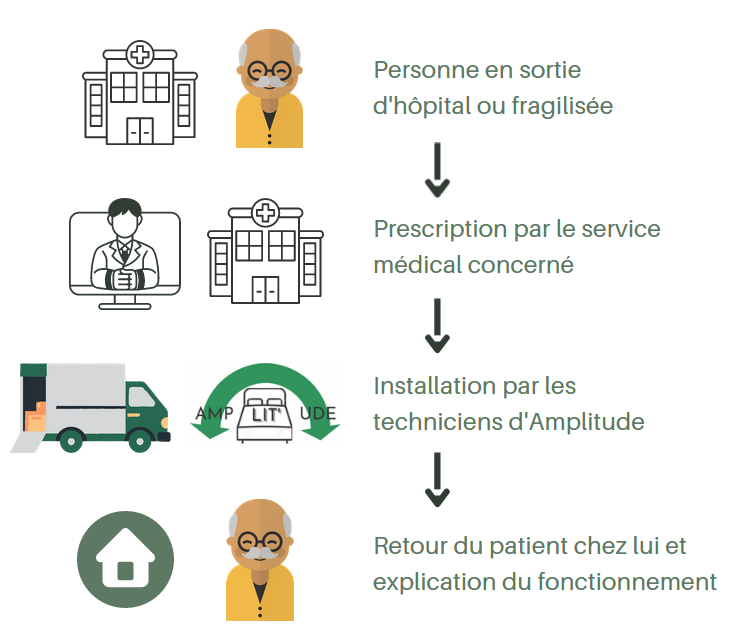

Mise en place de la solution

Sur le schéma ci-dessus, vous pouvez voir un exemple de mise en place d'Amplit'ude. Nos utilisateurs seront les personnes Pour les personnes en hospitalisation à domicile, en sortie d'hospitalisation ou fragilisées.
Une fois que le service médical préscrit au patient l'hospitalisation à domicile, il est redirigé vers le personnel d'Amplit'ude qui définira avec lui et le médecin traitant, ses besoins. Enfin, les techniciens d'Amplit'ude viennent installer le matériel chez la personne et elle peut rentrer chez elle. Une fois installée, une mise en fonctionnement et une explication au pas-à-pas est donnée. Le service après-vente est lui aussi disponible si la personne rencontre des problèmes dans l'utilisation et un reccueil de l'expérience utilisateur est aussi effectué.
Précédent Retour en haut ↑ Suivant